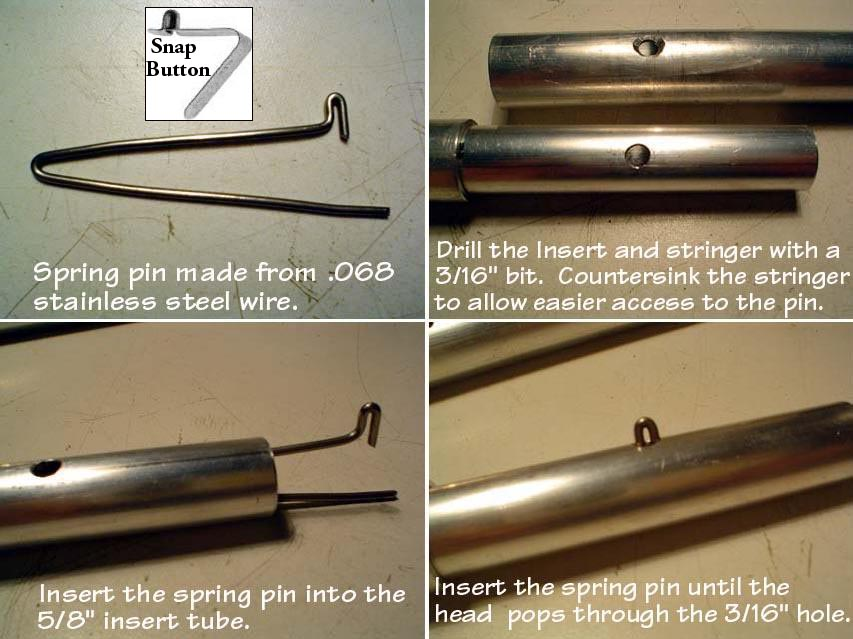

| Inserts (5 of 6) | Menu Last Page Next Page |
|

Spring Pins / Snap Buttons hold the tubes together and properly aligned during frame assembly. As an alternative, tape can be wrapped around each tube connection, but this results in a slower assembly / disassembly process.
Snap Buttons (Commercial) - Stainless steel snap buttons can be purchased from Valco (US). Order A-130-X or B-130-X snap buttons at $0.49ea with a $50 minimum. The X indicates stainless steel. You can download their catalog. Use the {Back} key to return from the link. Spring Pins (Homebuilt) - Rodolfo Maurette (AR) has designed homebuilt stainless steel spring pins to provide a secure and easy to assemble connection. Details of his spring pin installation can be seen above and on the next page. Commercial snap button installation uses the same technique. |
|